FRIDA: A Collaborative Robot Painter with a Differentiable, Real2Sim2Real Planning Environment
Preprint
ArXiv Preprint
Project Page
GitHub
Peter Schaldenbrand, James McCann, Jean Oh

Towards Real-Time Text2Video via CLIP-Guided, Pixel-Level Optimization
Preprint
ArXiv Preprint
Project Page
Demo
GitHub
Peter Schaldenbrand, Zhixuan Liu, Jean Oh
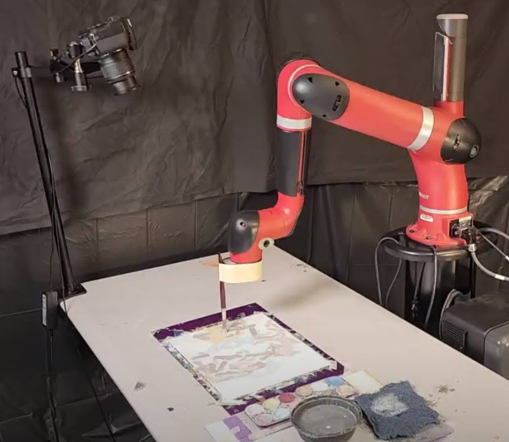
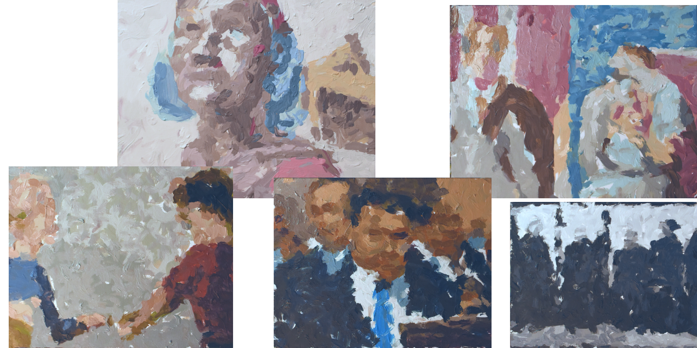
Frida: A Narrative Robot Painter with Versatile Styles
Robot Exhibition at the 2022 International Joint Conference on Artificial Intelligence
YouTube
Peter Schaldenbrand, Zhixuan Liu, Jia Chen Xu, James McCann, Jean Oh
Frida is a robotic system that paints from given language description and example style. We believe a nessary
component of art is that it communicates an important message, and Frida has been painting to draw attention
to the need to increase women's rights in America with respect to bodily autonomy.
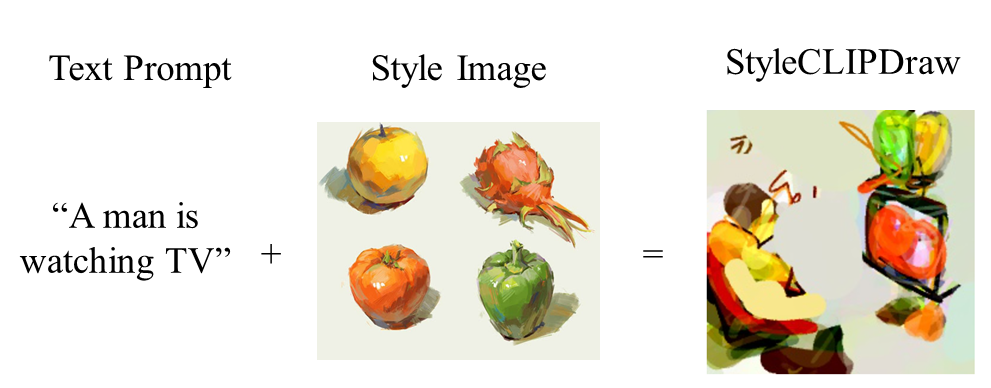
StyleCLIPDraw: Coupling Content and Style in Text-to-Drawing Translation
The 2022 International Joint Conference on Artificial Intelligence
The 2021 NeurIPS Workshop on Machine Learning for Creativity and Design
Accepted for Oral Presentation
arXiv
Github
What's AI on YouTube
Peter Schaldenbrand, Zhixuan Liu, and Jean Oh
StyleCLIPDraw is a text-to-drawing synthesis model with artistic control via a given style image and content control via a language description.
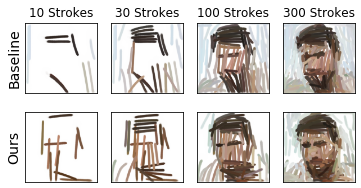
Content Masked Loss: Human-Like Brush Stroke Planning in a Reinforcement Learning Painting Agent.
AAAI'21
arXiv pre-print
Peter Schaldenbrand and Jean Oh
Novel approach to increasing the human-like planning of a reinforcement learning model.
Machine Traditional Animation: AniPainter
Presented at a Workshop at RSS WebsitePeter Schaldenbrand and Jean Oh
Using an affordable robot arm to "hand" paint animation frames.
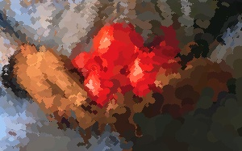
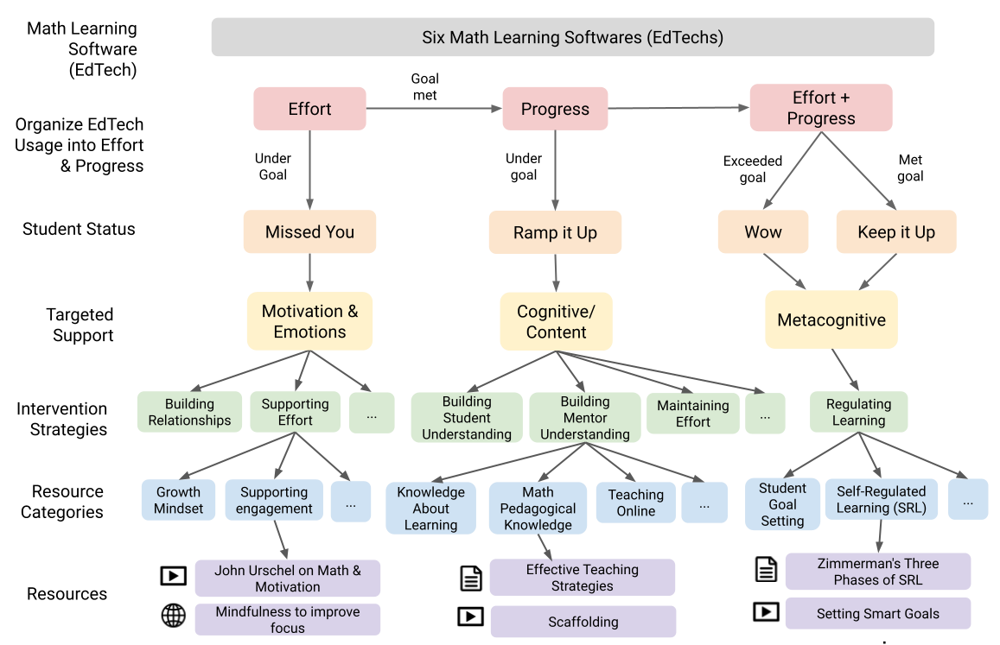
Computer-Supported Human Mentoring for Personalized and Equitable Math Learning
2021 Conf. on Artificial Intelligence in Education (AIED21)
Paper
Peter Schaldenbrand,
Nikki G. Lobczowski,
J. Elizabeth Richey,
Shivang Gupta,
Elizabeth A. McLaughlin,
Adetunji Adeniran, and
Kenneth R. Koedinger
Introducing the Personalized Learning² application; designed to make mentoring more effecient in order to give minoritized students more learning opportunities.
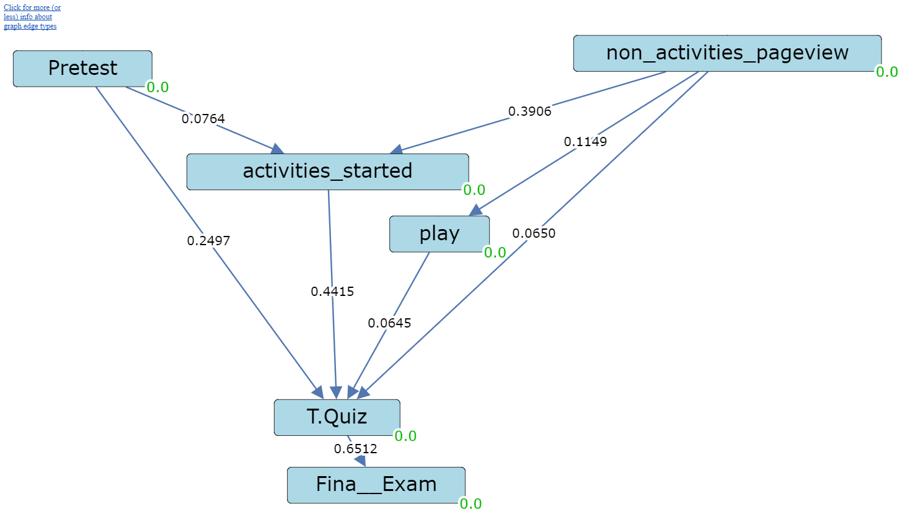
Is the Doer Effect Robust Across Multiple Data Sets?
11th Conf. on Educational Data Mining
Paper
Kenneth Koedinger, Richard Scheines, and Peter Schaldenbrand
Establishing the causal effect between active resources in an educational environment and learning.

Video Style Transfer
WebsiteVideo style transfer using Style Transfer by Relaxed Optimal Transport and Self-Similarity.
Workshops Organized & Teaching
CVPR'21 Workshop on Bridging the Gap between Subjective and Computational Measurements of Machine Creativity
Organizer
The 2021 Conference on Computer Vision and Pattern Recognition
Website
Ahmed Elgammal (Rutgers)
Hyeju Jang (U. British Columbia)
Eunsu Kang
James McCann (CMU)
Jean Oh (CMU)
Devi Parikh (Georgia Tech)
Peter Schaldenbrand
Robert Twomey (UCSD) and
Jun-Yan Zhu (CMU)
We are organizing a conference to highlight the differences between the way that humans and machines evalaute creativity, and begin a conversation on how to bridge this gap.
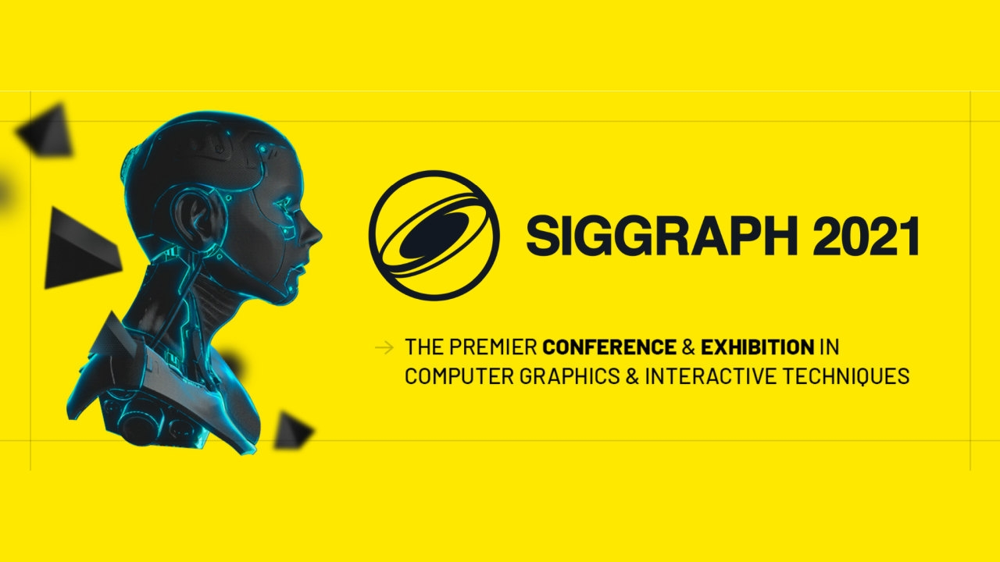
SIGGRAPH'21 Workshop on Measurable Creative AI
Organizer

RSS'21 Robotics x Arts Exhibition: Opportunities and Issues in Robotics Applied in the Arts
Invited Artist
AniPainter
Sang Leigh (Georgia Tech),
Jean Oh (CMU),
Frank Dellaert (GT),
Seth Hutchinson (GT),
Peter Schaldenbrand,
Gerry Cehn (GT), and
Juan D Florez-Castillo (GT)
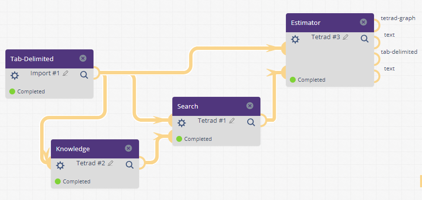
Causal Discovery with Tetrad in LearnSphere’s Tigris
Organizer
12th Conf. on Educational Data Mining
Paper
Richard Scheines, Peter Schaldenbrand, and Kenneth Koedinger
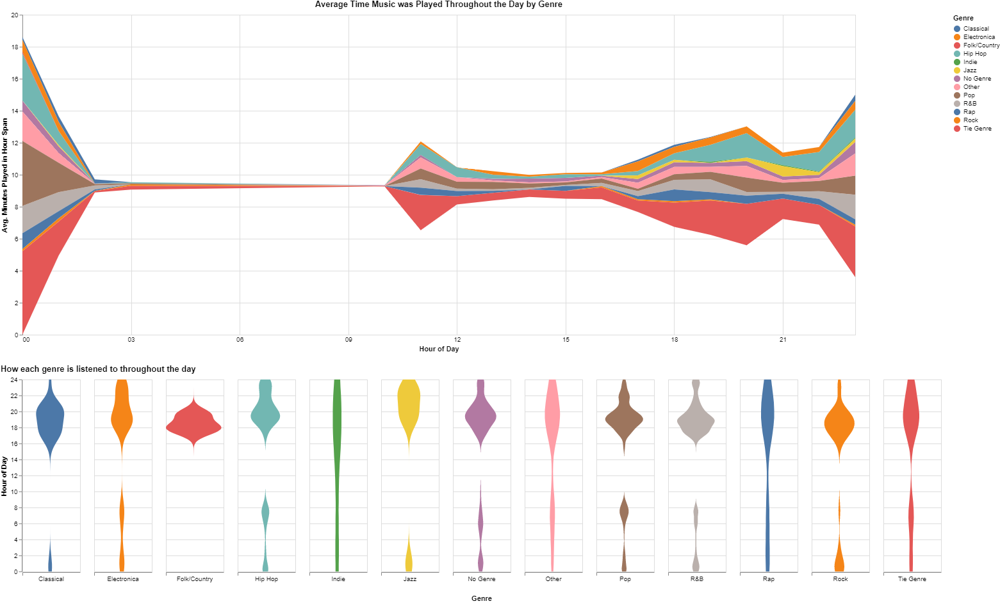
Visualizing Spotify Usage Data
Static Site GitHubPeter Schaldenbrand and Paulina Davison
Interactive visualizations of a user's Spotify data using Altair, Vega, and Streamlit.
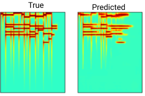
wav2midi: An Unsupervised Music Format Translation Model
PaperPeter Schaldenbrand and Husni Almoubayyed
Convert arbitrary waveform audio music into MIDI format. Trained without paired wav-midi examples.
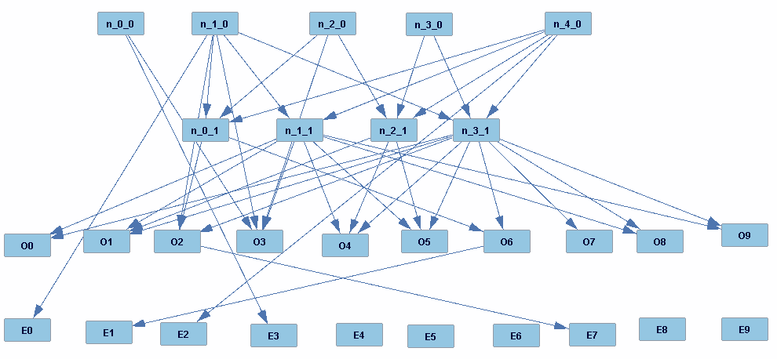
Non-Differentiable, Parametric Model Optimization via Causal Discovery
Paper[In Progress] Optimize the parameters of a model using causal discovery algorithms. Allows for non-differentiable activation functions in the model.
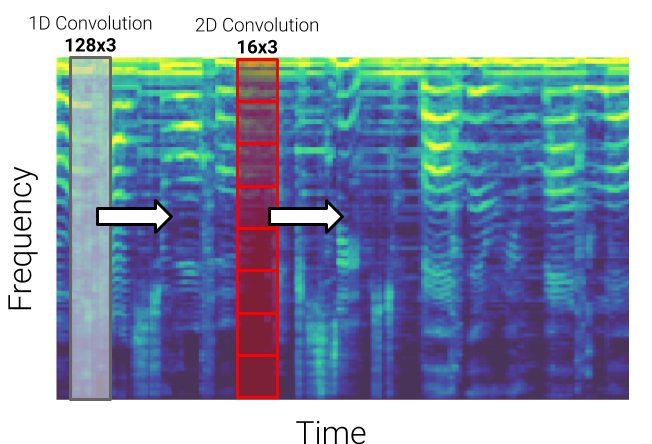
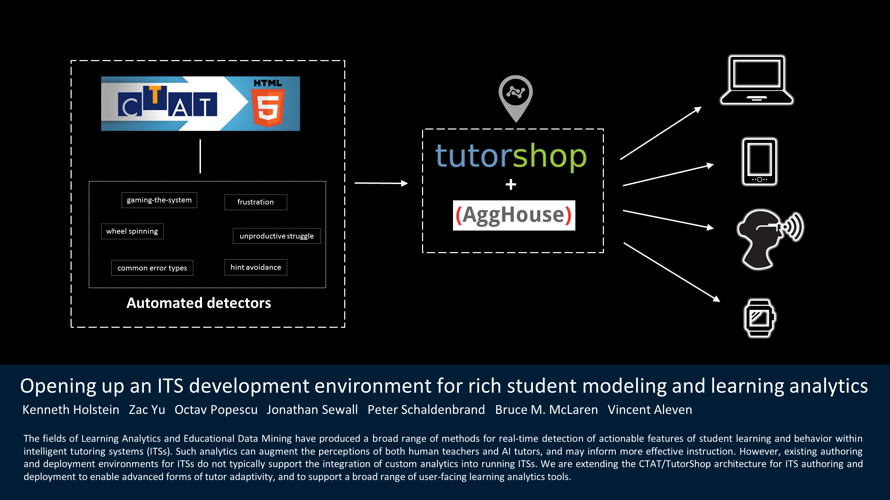
Real Time Learning Analytics for Intelligent Tutoring Systems
PosterKenneth Holstein, Zac Yu, Octav Popescu, Jonathan Sewall, Peter Schaldenbrand, Bruce M. McLaren, and Vincent Aleven
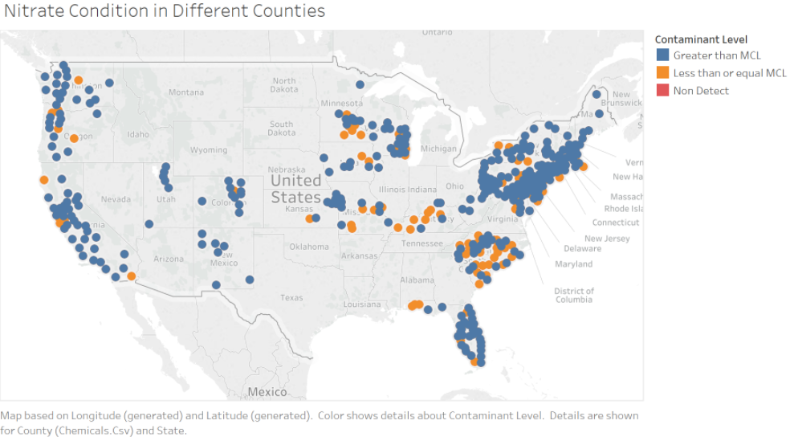
A Deep Dive into Water Contamination
Citadel - The Data Open 2018
Paper
Peter Schaldenbrand, Husni Almoubayyed, Zecong Hu, and Xinyi Ju
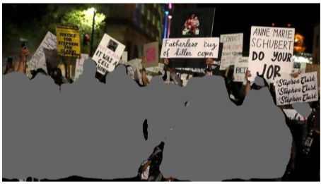
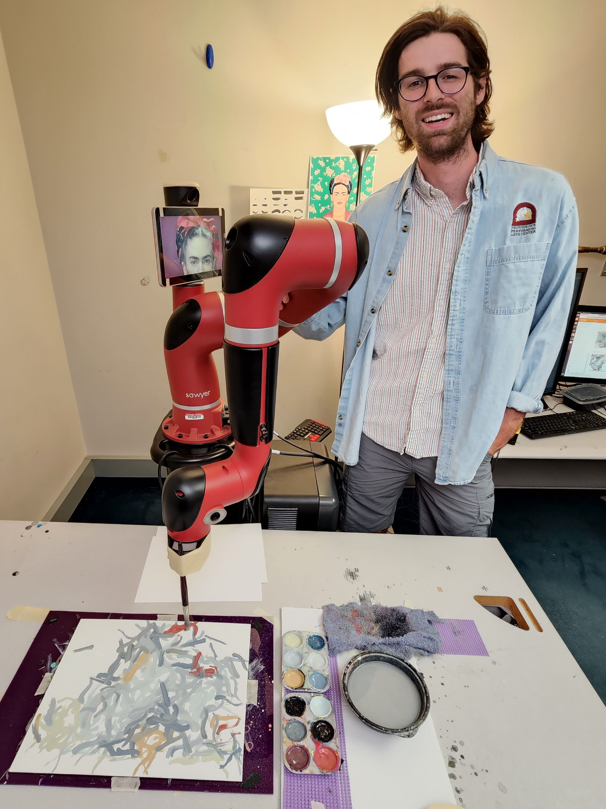
I am a PhD student at Carnegie Mellon University's Robotics Institute advised by Dr. Jean Oh.
My research goal is to lower the barriers that people face in performing acts of creativity such as painting, composing music, or creating video content by supporting creative expression with artificial intelligence. In particular, I am creating AI tools that generate visual content using elementary skills such as language and decisions as input. Such tools can enable people with a lack of mobility or cognitive impairments to engage in creative expression and art therapy using the skills and abilities that they do have.
Research Programmer / Analyst
Carnegie Mellon University
Human-Computer Interaction Institute
2017 — July 2021
Personalized Learning²
Full-stack, lead developer on the Personalized Learning² project; addressing the opportunity gap for marginalized students. Created an interface for teachers and mentors at public schools in the Pittsburgh region to view data from their students’ usage of multiple Math tutoring software and access resources to intervene on students’ motivational and cognitive obstacles. Gave input on the designing of the tool and managed multiple design interns throughout its development process.
Learnsphere Tigris
Contributed improvements in full stack development to LearnSphere’s Tigris: An online workflow tool for analyzing, visualizing, and mining educational data
Presented and taught at workshops and CMU courses. Created videos to teach the software tools I contributed to.
Carnegie Mellon University
Robotics Institute
Doctor of Philosophy
GPA: 4.0
August 2021 —
The University of Pittsburgh
Bachelor of Science: Computer Science
GPA: 3.9
2013 — 2017
Central Catholic High School
Pittsburgh, PA
2009 — 2013
Volunteer
Muscular Dystrophy Association
Councelor and unit leader at MDA's summer camp for children with muscular diseases
2012 — 2020
Action
Volleyball
High school and college experience
Assisted coach at Central Catholic High School
Assisted coach at Central Catholic High School
Biking
You'll catch me outside on my bike as soon as the warm weather hits. I use it to find the best rock skipping spots in Western PA.
Music
Guitar, Saxophone, Bagpipes, Synthesizer in what small free time I find
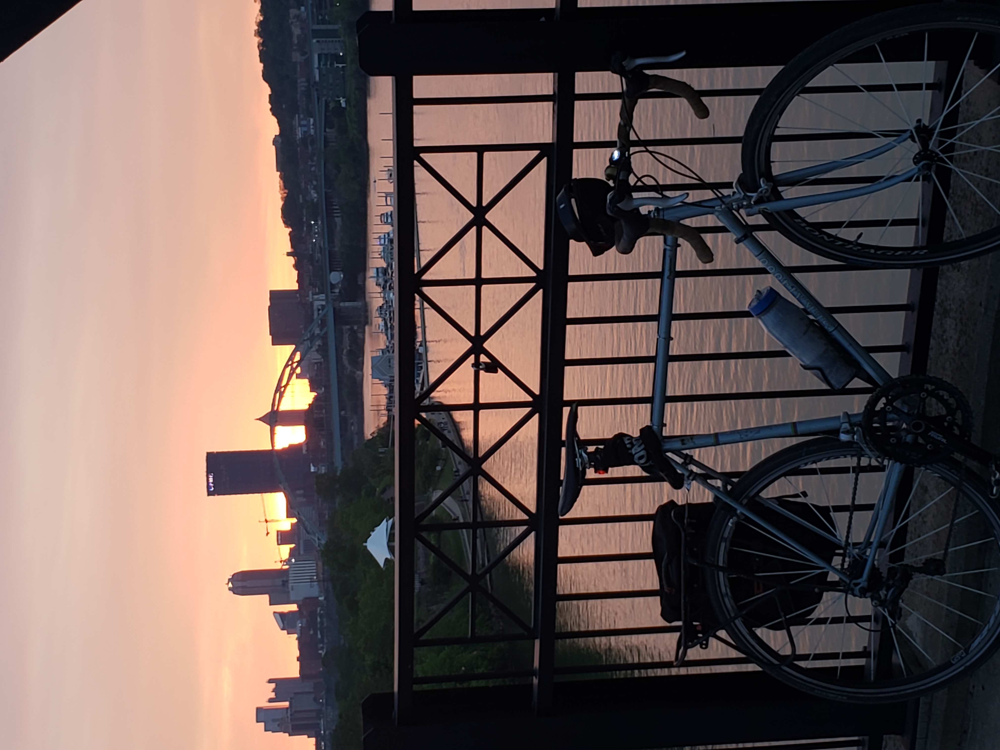